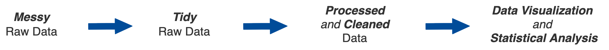
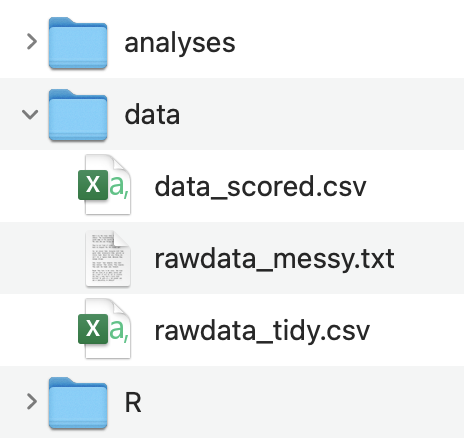
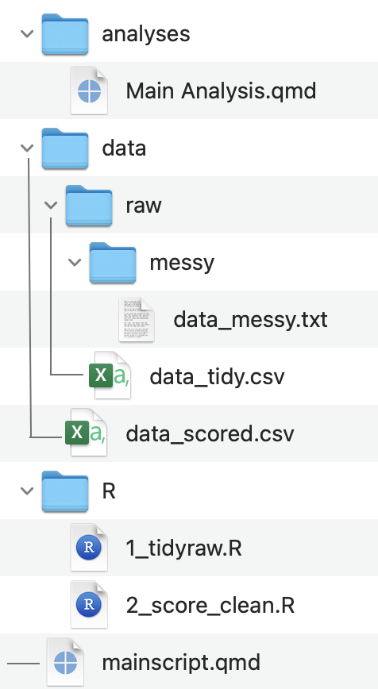
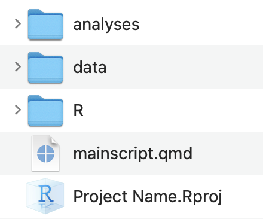
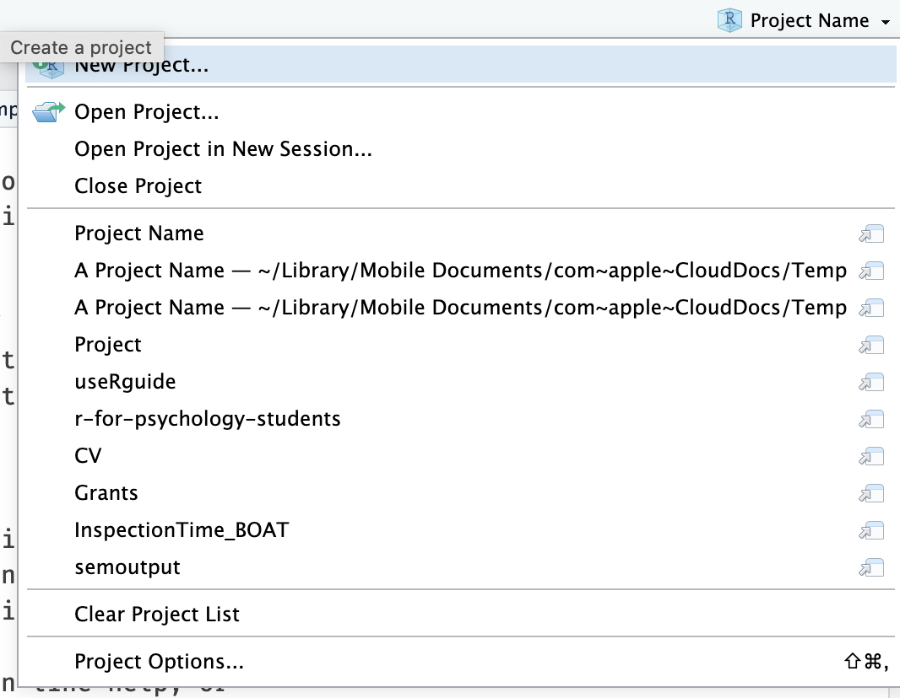
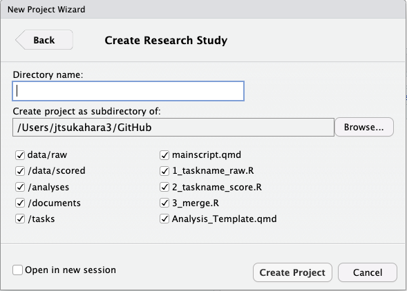

## data preparation
source("R/1_tidyraw.R")
## data scoring
source("R/2_score_clean.R")
source("R/3_merge.R")
## statistical analysis
library(quarto)
quarto_render("analyses/Main Analyses.qmd")Class 5: Reproducible Projects
Up to this point we have not had to give much thought to project organization and reproducibility because you have mainly been working with a single R script and importing one or two data files. However, working on a research project often involves a larger set of R scripts, multiple data files, and a report containing data visualizations and statistical analyses.
Project organization is often overlooked at the expense of “just getting it done” because it takes more time and forethought to organize a project. However, the “just getting it done” approach can lead to a lot of unintended consequences:
Inefficient Workflow: Disorganization can lead to a chaotic workflow where significant time is spent locating files, understanding what each script does, and figuring out the correct order of operations for running analyses. This inefficiency can drastically slow down the research progress.
Time Inefficiency: Researchers may waste significant amounts of time searching for files, data, or specific pieces of code within a disorganized project. This inefficiency can extend project timelines and delay the dissemination of findings.
Increased Errors: A lack of organization can lead to more mistakes. This is because it’s easier to lose critical pieces of code or overlook important updates to scripts. It is also harder to go back and check your work to make sure things were done correctly.
Difficulty in Scaling the Project: As projects grow, the lack of initial organization can make it much more difficult to scale up. This can limit the scope of the research or lead to significant restructuring efforts down the line.
Barriers to Revising Analysis: Research often requires revisiting and revising analyses as new data comes in or as hypotheses evolve. A lack of organization can make it difficult to update analyses or integrate new data seamlessly, stifling the dynamic nature of research.
Challenges in Publishing and Sharing: When preparing research for publication or sharing with the broader scientific community, a well-organized project simplifies the process of compiling results, data, and methods. An unorganized project can impede these efforts, delaying or even jeopardizing publication.
Reproducibility Issues: Without clear organization, reproducing the results of a project can become nearly impossible, both for the original researchers and for others who may want to build upon the work. This undermines the credibility and utility of the research.
The thing is, simply using R does not get around any of this. In fact, sometimes it can exacerbate it because of the extra cognitive demand faced when writing code. This extra demand can make the “just getting it done” approach more tempting. So what is the solution?
The solution is to slow down and give some thought to the organization of your project and it’s reproducibility.
Frontloading effort saves future headaches.
Reproducible Projects
Part of the scientific process involves carefully documenting every step in our procedures. Doing so not only ensures higher quality research, but also enables your future self and others to fully reproduce what you did, go back and analyze the data in a different way, or catch errors in the data analysis process. Without a fully reproducible project, it may be difficult or impossible to catch errors that were made.
What does reproducibility mean?
Reproducibility means that all data processing and analysis steps can be fully reproduced using only the original raw data files and the execution of the R scripts. There are different levels of reproducibility (I made these up):
Partially reproducible - only some data processing and analysis steps can be reproduced, which may be due to a lack of original raw data files, the “just get it done” approach, or the use of proprietary and non-reproducible software.
Minimally reproducible (acceptable) - all data processing and analysis steps can be reproduced on any research team members computer without any modifications needed.
Moderately reproducible (desired) - meets the minimal level plus other people not involved in the research project can reproduce the steps with minimal modifications.
Highly reproducible (good luck!) - fully reproducible without major modifications needed by people not involved in the research project 5 - 10+ years from now.
A minimal level of reproducibility is still acceptable, as achieving more requires significant time and effort. We should strive for a moderate amount of reproducibility but achieving it requires more than just writing code. Your code must be organized, easy to understand, and include notes and documentation. Even if you or someone else attempts to reproduce your steps in the future, they can modify the code to make it work. The highest level of reproducibility is difficult to achieve due to software and code updates. Your code may only work with the current version of R or other packages. There are solutions to this problem of software and code updates, but who knows if those will work in the future!
Simply using R for data analysis does not guarantee that your workflow is reproducible. In fact, there are many non-reproducible ways to use R. To ensure at least a moderate level of reproducibility, consider the following criteria (this is not an exhaustive list):
Your statistical analysis (the final step) can be fully reproduced from the raw data files and your R scripts
Your code can be reproduced on other computers without any modifications
Your data and R scripts are organized and documented in a way that makes them easily understandable
This last criterion is extremely important, but is often overlooked. If others cannot understand your workflow, then it is not moderately reproducible. Therefore, it is important to take the time and think about the organization of your project, files, data, and scripts.
Project Workflow
A good starting point for organizing your project is to map out the steps required for processing and analyzing your data.
A typical data analysis workflow looks something like this:

You will always start with a messy raw data file. Messy raw data files are hard to understand, have poor column and value labels, contain way too many columns and rows, and are just hard to work with. The initial data preparation stage is all about getting raw data files that are easy to work with.
The end product of the data preparation stage is tidy raw data files. Tidy raw data files are easy to understand, have sensible column and value labels, contain only relevant columns and rows, and are easy to work with.
Once you have a tidy raw data file you can start on the data analysis stage. The workflow for this stage can vary widely depending on your particular research project. However, there are typically at least two end products of the data analysis stage:
- A data file that is ready for statistical analysis
- A report document of the results from your statistical analysis (also includes data visualizations)
I suggest using this data analysis workflow as a starting point for organizing your project:
Organize your folders and files to match this workflow
Create separate scripts for each stage
File Organization
Good project organization starts with easy to understand folder and file organization. You want this organization to match your data analysis workflow:

Data Folder
Notice how the structure of the data folder follows the data analysis workflow. The original messy raw data files are stored in data / raw / messy. The tidy raw data files are stored in data / raw. And the processed and cleaned data files are stored in data
Alternatively, if you only have one original messy raw data file that you are working with you can just put all the data files in data and name the data files appropriately:

The basic priniciple here is that your data folder organization and data file naming maps onto the end products in your data analysis workflow.
R Folder
I highly recommend that you put all your R scripts in one folder, rather than having them scattered across different folders.
Additionally, I recommend that you append a prefix number corresponding to the order in which the scripts need to be ran and a suffix corresponding to what stage of the data analysis workflow it is in:
1_tidyraw.R
2_score_clean.R
3_merge.R
Utlimately these scripts should be cleaned up, commented, and easy to understand.
Initially, coding can be messy as you grapple with determining the precise data processing approach. You might consider creating a script (or a folder of scripts) that are for messing around and figuring out how to process your data:
- Untitled.R
Analyses Folder
The analyses folder will contain Quarto documents (more on these in the next class) that you will use to genearate reports for exploring your data, creating data visualizations, and conduct statistical analyses. This folder will have at least one file:
- Main Analyses.qmd
These document should be cleaned up, well organized, and easy to understand.
As with the R scripts, you might like to have a Quarto document (or folder of documents) just for messing around and figuring out how to analyze your data:
- Untitled.qmd
mainscript
You might also consider creating a mainscript.R or mainscript.qmd file to source all your R scripts and Quarto documents, rather than opening and sourcing each R script and Quarto document one at a time.
It might be a file simply containing:
I typically just include the mainscript file in the root directory of the project rather than in the R script folder.
A complete folder and file organization might look something like:

Importing Data
Up until now, you have been using absolute file paths and the RStudio Import Dataset GUI for importing files into R. This is not a reproducible way of importing data into R. You can still use the RStudio Import Dataset GUI to figure out what type of data file you are importing (e.g., tab-delimited, csv) but I will now show you a simple and reproducible way of importing data into R.
File Paths
R needs to know the full file path to the file on your computer in order to import it - this is what is referred to as an absolute file path. Absolute file paths start at the root directory of your computer and might look something like:
On Macs:
Users/username/projects/project_name/data/a_file.csv
On Windows:
C:\username\projects\project_name\data\a_file.csv
Relative file paths on the other hand, start from a folder - typically a project folder
data/a_file.csv
Relative file paths need to be used in order for your project to meet even a minimal level of reproducibility. A relative file path can be used on different computers as long as the internal organization of folders and files for the project are the same.
However, at some point your computer does need to know the absolute file path to your project folder. A convenient and reproducible way of doing this is by using a combination of RStudio Projects and here::here() .
RStudio Projects
RStudio Projects allow you to open isolated instances of R and RStudio for each of your projects. RStudio projects are convenient for a number of reasons, but the most useful thing is setting a file marker for where the root directory of your project folder is located.
To create an RStudio Project:
Create a folder for your project (if you do not have one yet)
File -> New Project…
Choose Existing Directory -> Browse to your project folder -> Create Project
Notice that there is now a .Rproj file in your project folder

When working on your project, you should always open RStudio by opening the .Rproj file
You can also see which RStudio project is open and open RStudio projects in the very top-right corner of RStudio.

here::here()
In combination with RStudio projects the here package offers a convenient way of specifying relative file paths.
When you load the here package with library(here) it will search for the .Rproj file and start file paths at that point whenever the here() function is used.
library(here)here() starts at /Users/jtsukahara3/GitHub Repos/r-for-psychology-studentsNotice how that where here() starts is an absolute file path to your project folder. You did not have to specify the absolute file path in code. Meaning this is a reproducible way for the absolute file path to automatically be set.
Now you can use a relative file path inside of here()
here("data/a_file.csv")[1] "/Users/jtsukahara3/GitHub Repos/r-for-psychology-students/data/a_file.csv"Every time you use here() you know that the file path will start at where you have your .Rproj file saved. Instead of messing around with working directories using setwd() or getwd(), just use here() and RStudio Projects. This becomes especially helpful when working with Quarto documents.
You can visually separate the folder path and the file name, making your script easier to read.
here("data", "a_file.csv")[1] "/Users/jtsukahara3/GitHub Repos/r-for-psychology-students/data/a_file.csv"You can then use here() inside of import and and output functions:
library(readr)
library(here)
data_import <- read_csv(here("data", "a_file.csv"))
write_csv(data_import, here("data", "a_new_file.csv"))Using Templates
Writing organized, clean, and easy to understand R code is hard. Starting with a template R script can help a lot. For this purpose, I have developed an R package psyworkflow that contains R script templates you can use.
See documentation on psyworkflow
Install
First, if you do not have the devtools package installed:
install.packages("devtools")Install the psyworkflow package from my GitHub repository using the devtools package:
devtools::install_github("dr-JT/psyworkflow")Restart R
Session -> Restart R
Download R Script Templates
If you already have an RProject setup and just want to download some of the R script templates you can do so with the get_template() function.
psyworkflow::get_template()To see what the options are type in the console window
?psyworkflow::get_templateShow Tidy Template Script
# ---- Setup -------------------------------------------------------------------
# packages
library(here)
library(readr)
library(dplyr)
library(purrr) # delete if not importing a batch of files
# directories
import_dir <- "data/raw/messy"
output_dir <- "data/raw"
# file names
task <- "taskname"
import_file <- paste(task, ".txt", sep = "")
output_file <- paste(task, "raw.csv", sep = "_")
# ------------------------------------------------------------------------------
# ---- Import Data -------------------------------------------------------------
# to import a single file
data_import <- read_delim(here(import_dir, import_file), delim = "\t",
escape_double = FALSE, trim_ws = TRUE)
# alternatively to import a batch of files...
# change the arguments in purrr::map_df() depending on type of data files
# this example is for files created from eprime and needs encoding = "UCS-2LE"
files <- list.files(here(import_dir, task), pattern = ".txt", full.names = TRUE)
data_import <- files |>
map_df(read_delim, delim = "\t",
escape_double = FALSE, trim_ws = TRUE, na = "NULL",
locale = locale(encoding = "UCS-2LE"))
# ------------------------------------------------------------------------------
# ---- Tidy Data ---------------------------------------------------------------
data_raw <- data_import |>
rename() |>
filter() |>
mutate() |>
select()
# ------------------------------------------------------------------------------
# ---- Save Data ---------------------------------------------------------------
write_csv(data_raw, here(output_dir, output_file))
# ------------------------------------------------------------------------------
rm(list = ls())Create a New Project
Close RStudio and reopen a new instance of RStudio (not from an RProject file).
Once you have the psyworkflow package installed you will be able to create a new RProject directory and file from my Research Study template. This will automatically create the directory structure outlined in the previous chapter. It will also add template R scripts in R / templates and a mainscript.qmd file.
Using this template will allow you to get right to working with your data in R, without having to spend too much time thinking about organization (I have already done that for you).
To create an RProject from this template:
File -> New Project… -> New Directory -> Research Study (you might need to scroll down to see it)
This will bring up a window to customize the template:

Type in whatever you want for the Directory Name - this will end up being the name of the project folder and RProject file.
Click on Browse… and create the project on your desktop, for now.
Keep all the defaults and select Create Project.
Give it some time, and it will reopen RStudio from the newly created RProject. Take a look at the file pane and you can see that the folders have been created, and R Script templates downloaded.